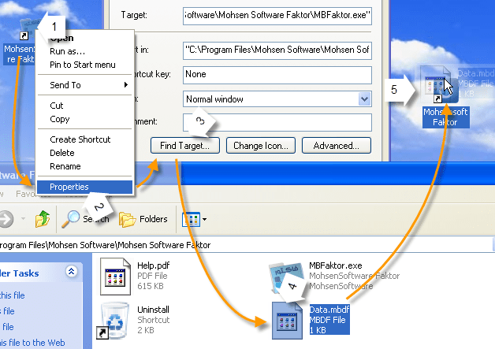

مهاجرت از نسخه های قبلی¶
این بخش برای کاربرانی می باشد که قبلا از نسخه های قبلی نرم افزار ( 3 به پایین ، مثلا 2.8) استفاده می کردند و هم اکنون می خواهند از این نسخه استفاده نمایند و نیاز دارند از فایلها و موارد ذخیره شده ی نسخه های قبلی خود استفاده نمایند.
توجه
اگر قصد استفاده از بانک اطلاعاتی انبار را دارید قبل از حذف نسخه قبلی این فایل را جابجا کنید.
توجه
قبل از هر اقدامی از تمام فایل های فاکتور ذخیره شده یک کپی تهیه کرده و به هیچ وجه آنها را باز نکنید تا اینکه مطمئن شده باشید که مشکلی با باز شدن در ویرایش جدید وجود ندارد.
برای این منظور راهنمای استفاده از هر مورد بصورت جداگانه شرح داده می شود:
فایل سند فاکتور : این فایل در نسخه جدید تغییرات زیادی داشته است ، ولی به هیچ وجه نگران انتقال آن نباشید تنها کاری که باید انجام دهید این است که یک بار این اسناد را با این نسخه باز کنید ، برنامه بصورت خودکار آن را تبدیل به ویرایش جدید میکند . توصیه میشود قبل از انجام این کار یک کپی از اطلاعات خود در محلی دیگر بگیرید تا در صورت هر گونه خطای احتمالی فایل های شما از بین نرود . این اطمینان را به شما میدهیم که فرایند تبدیل کاملا ایمن طراحی شده و تا کل تبدیل انجام نشود فایل نسخه قبلی دست نخورده باقی می ماند ، ولی داشتن کپی از اطلاعات نسخه قبلی توصیه می شود.
نکته مهم: توجه داشته باشید که تبدیل صحیح حروف هنگامی رخ می دهد که فایل در هنگام تبدیل در همان وضعیت سیستم با ویرایش قدیمی بصورت صحیح باز شود در غیر اینصورت کلمات فارسی بصورت بهم ریخته تبدیل میشود ، پس قبل از باز کردن فایل با ویرایش جدید از صحت باز شدن در ویرایش قدیمی اطمینان حاصل نمایید.اگر فایل در ویرایش قدیمی نیز بصورت بهم ریخته نمایش داده می شود طبق قسمت پایانی فایل راهنمای آن ویرایش تنظیمات ویندوز را تغییر دهید.
بانک اطلاعاتی انبار : فایلی که شامل موارد موجود در انبار می باشد فایل اطلاعاتی انبار نام دارد . این فایل نیز تغییراتی داشته است که برنامه بصورت خودکار آن را تبدیل به ویرایش جدید میکند ، اما چون مسیر فایل در نسخه جدید عوض شده است برای شناساندن بانک اطلاعات قبلی انبار به برنامه جدید مراحل زیر را طی نمایید :
به محل نصب ویرایش قبلی بروید . برای اینکار روی آیکون آن راست کرده و گزینه "Properties" را انتخاب نمایید . در پنجره باز شده گزینه "Find Target…" و یا "Open File Location" را انتخاب نمایید تا پوشه محل نصب برنامه باز شود.
در این پوشه یک فایل با نام Data یا Data.mbdf وجود دارد ، آن را با ماوس گرفته و روی آیکون نسخه جدید برنامه در میز کار یا هر جای دیگری رها کنید .
طبق پیامهایی که نمایش داده می شود عمل نمایید .